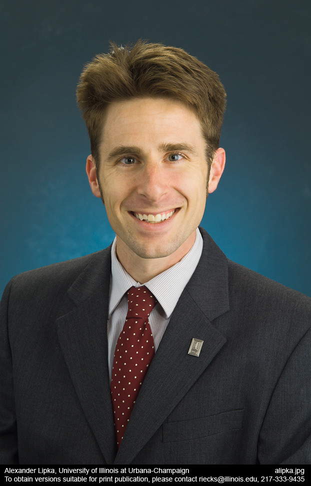
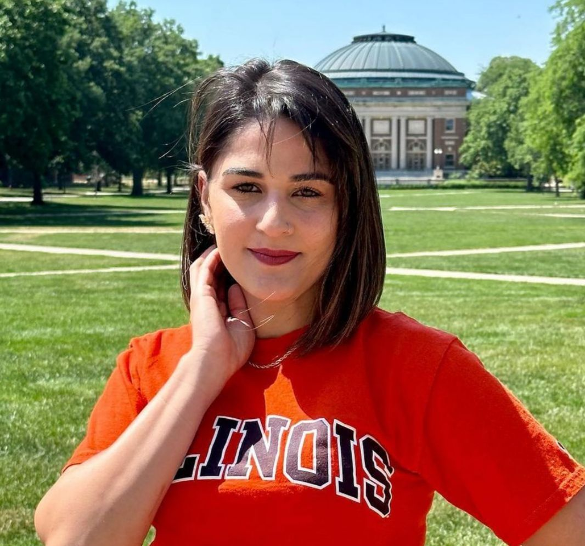

Meet the Team

Dr. Alexander E. Lipka
Principal Investigator
Dr. Lipka leads the Lipka Lab, specializing in quantitative genetics for crops. His background is in applied statistics, and enjoys using this background to develop more robust genotype-to-phenotype approaches. Outside of work, Dr. Lipka enjoys hanging out with his family, going long-distance running, and playing piano and guitar. Dr. Lipka tries to visit a different national park each summer.
Google Scholar ProfileLinkedIn Profile

Dr. Sarah Rhodes Richards
Postdoctoral Researcher
Sarah is a Postdoctoral Researcher in the Lipka Lab at the University of Illinois, where she works in collaboration with The Land Institute to develop climate-resilient perennial sorghum. Her research focuses on optimizing genomic prediction pipelines to support the long-term domestication and deployment of perennial crops in global agricultural systems.By integrating whole-genome resequencing with multi-year field phenotyping across diverse environments in Georgia, Kansas, and Uganda, Sarah builds and validates multi-environment prediction models. Her work utilizes $S. bicolor \times S. halepense$ populations to model $G \times E$ interactions and create simulation-based "virtual plants." These tools are designed to improve prediction accuracy for essential perenniality traits—such as rhizome vigor, overwintering survival, and regrowth capacity—ultimately providing accessible, breeder-friendly resources that accelerate genetic gain..
Google Scholar ProfileLinkedIn Profile

Talissa Floriani
PhD Student
Talissa is an agronomist with a master’s degree in Genetics and Plant Breeding. Her research focuses on integrating machine learning techniques to uncover associations between rare genetic variants and agronomic traits. Outside of her academic pursuits, Talissa is passionate about fitness and enjoys painting, cooking, and spending quality time with her family.
Google Scholar ProfileLinkedIn Profile

Dr. Boris Alladassi
Postdoctoral Researcher
Boris M.E. Alladassi is a Postdoctoral Research Associate in the Lipka Lab at the University of Illinois Urbana-Champaign. His research focuses on developing new quantitative genetics tools to test emerging models, including the omnigenic model, for complex traits dissection and prediction. Boris obtained his Ph.D. in Plant Breeding with a Statistics minor from Iowa State University.
Google Scholar ProfileLinkedIn Profile
Research Gate Profile
CV

Dr. Camila Godoy
Postdoctoral Researcher
Dr. Jenifer Camila Godoy holds a Master’s and Ph.D. in Genetics and Plant Breeding from the University of São Paulo and is currently a Postdoctoral Research Associate in the Lipka Lab. Her research focuses on developing innovative approaches to integrate gene co-expression networks into genomic selection models to improve the prediction accuracy of maize hybrid performance in non-evaluated environments. Outside of her research, she enjoys attending church, spending quiet moments at home with her husband, and staying connected with her family. She is also learning to play the organ, a skill she continues to develop with enthusiasm.
LinkedIn ProfileGoogle Scholar Profile
CV

Denizard Bueno
PhD Candidate - Visiting Scholar
Denizard Bueno is a visitor scholar at UIUC and a PhD candidate in Genetics and Plant Breeding at UFV, Brazil. He holds a master’s degree in the same field and a bachelor’s degree in Agronomy from UFV. Currently, he is working in molecular biology, bioinformatics, and plant breeding, employing genomic and breeding tools to improve plant architecture in tomato crops by leveraging the brachytic gene in short-internode tomato plants.
LinkedIn Profile